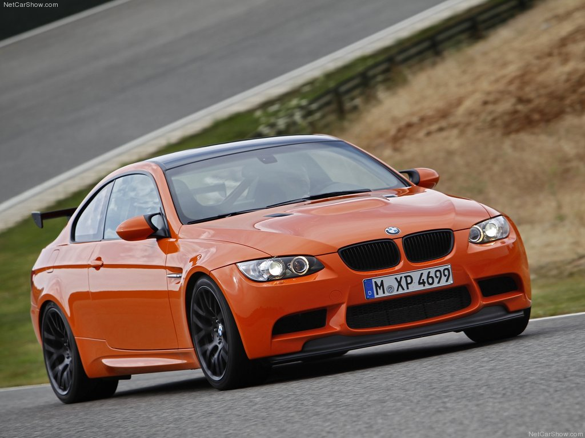

BMW M3 GTS (2011)
Cu BMW M3 GTS, BMW M GmbH oferă acum o performanță cu adevărat remarcabilă, bazată pe BMW M3 Coupé, ideală, de asemenea, pentru evenimentele Clubsport - exact mașina potrivită pentru clientul cu adevărat exigent, care solicită cel mai mare în ceea ce privește puterea și performanța. BMW M3 GTS este în mare parte construit manual de cei mai pricepuți meșteri de la BMW M GmbH, ca un pachet perfect armonizat de modificări remarcabile, producția fiind exclusiv la comanda personală a clientului. Concentrate pe motorsport, modificările cuprind atât trenul de rulare, suspensia și caroseria mașinii, cât și interiorul acesteia. Lansarea pe piață a BMW M3 GTS va fi în primăvara anului 2010. Oferind acest model cu adevărat exclusivist pentru pasionatul de sporturi cu motor autentic, BMW M GmbH continuă o mare tradiție introdusă în generațiile anterioare ale BMW M3. Încă o dată, potențialul sportiv remarcabil al BMW M3 este în mod constant îmbunătățit și modernizat la un nivel și mai înalt, clientul beneficiind de gama largă de know-how a Companiei în dezvoltarea și producția de mașini de curse. Prin modificările sale orientate spre curse, care sporesc atât performanța, cât și siguranța, BMW M3 GTS este gata să participe la evenimentele Clubsport de pe pistă și vine cu opțiunea de omologare pe șosea. Pentru ca șoferul să poată merge spre pista de curse cu exact aceeași mașină pe care o va folosi pentru curse.